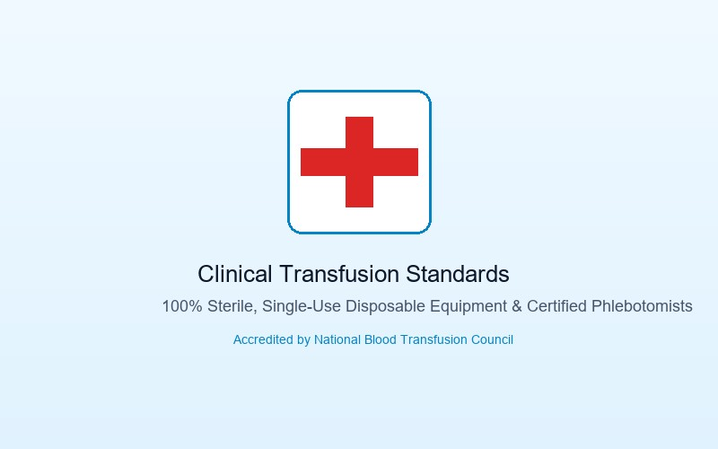

Accident & Trauma Patients
Severe road collision victims frequently require between 10 to 50 units of packed red blood cells within the first few hours of hospitalization to stabilize hemorrhagic shock.
Donate Blood, Save Lives, Be Someone's Hope.

Welcome to Explore Blood, an educational and community awareness initiative dedicated to spreading the vital message of voluntary blood donation. Blood is the priceless elixir of human life. In emergency rooms, surgical suites, and trauma units worldwide, thousands of patients battle life-threatening situations every single minute. Because blood cannot be manufactured synthetically in laboratories, human generosity is the only source of hope.
When you make the selfless decision to roll up your sleeve and donate blood, you perform an extraordinary act of kindness. A single donation of approximately 450 milliliters can be processed into three lifesaving components—red blood cells, plasma, and platelets—directly offering up to three individuals a second chance at life.

Blood transfusions are essential for the survival of accident victims, mothers facing childbirth complications, pediatric leukemia patients, and individuals undergoing complex surgeries or organ transplants. Without an abundant, reliable, and rigorously tested blood supply, modern emergency medicine would simply collapse.
Globally, blood banks require an uninterrupted influx of voluntary donations every day because whole blood and its components have finite shelf lives:
Voluntary non-remunerated blood donors represent the safest foundation for any nation’s blood transfusion service. When citizens donate freely out of altruism rather than financial pressure, the prevalence of transfusion-transmissible infections decreases dramatically. Becoming a regular voluntary donor fosters community empathy and ensures that no emergency surgery is ever postponed due to an empty blood bank refrigerator.
Just 1% of a country’s eligible population donating blood regularly is sufficient to meet the basic transfusion demands of that entire nation. Yet, many healthcare facilities face frequent seasonal shortages during holiday periods.

Severe road collision victims frequently require between 10 to 50 units of packed red blood cells within the first few hours of hospitalization to stabilize hemorrhagic shock.

Chemotherapy treatments often destroy healthy bone marrow alongside malignant cells, requiring regular platelet infusions to prevent internal bleeding during recovery.
Human blood is classified under the ABO system and the Rh (Rhesus) factor, yielding eight standard blood groups: A+, A-, B+, B-, AB+, AB-, O+, and O-. Knowing your blood group enables you to respond quickly during targeted emergency appeals.
Learn comprehensive compatibility details on our Blood Donation information page.